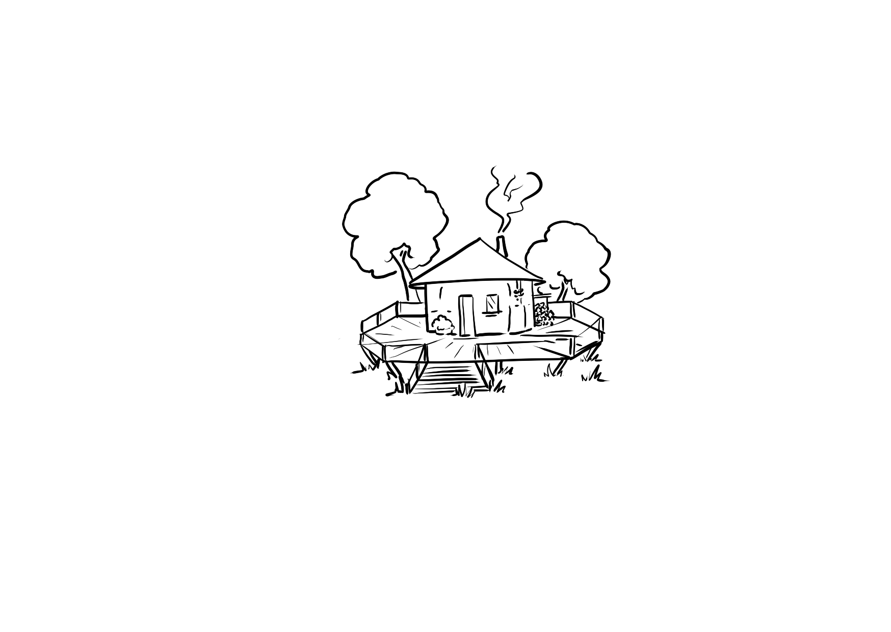
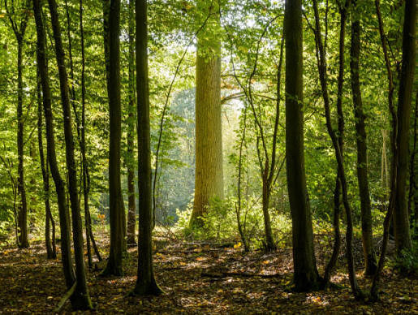
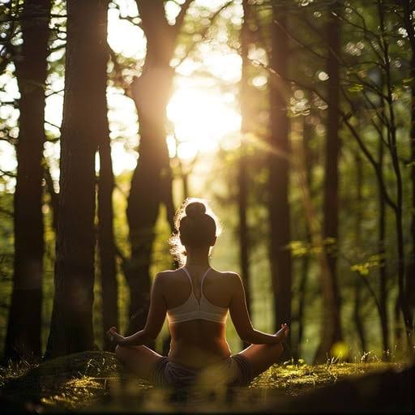
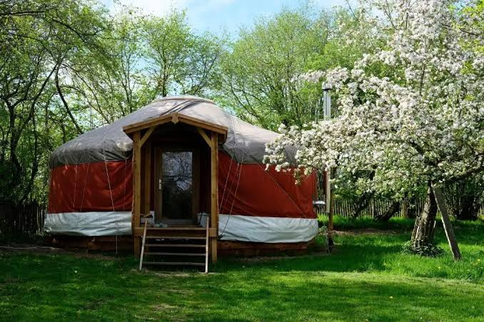

Une nuit dans un logement insolite ⛺
Envie de déconnecter et de vivre au rythme de la nature ? Nous vous proposons une expérience d'hébergement unique en plein cœur de notre ferme agroécologique : un séjour dans notre logement atypique.
Véritable cocon rond et chaleureux, ce logement insolite est conçu avec des matériaux naturels. Il s'intègre parfaitement dans le paysage, offrant un espace de repos apaisant, loin de l'agitation du quotidien.
Immersion paysanne 🌿
Dormir à la Ferme de Chevronsart, c'est s'offrir une immersion totale dans notre écosystème. Ici, le bruit de la circulation laisse place au chant des oiseaux au petit matin et au son paisible de nos animaux dans les prairies alentour.
C'est l'occasion idéale pour ralentir, observer la biodiversité foisonnante de nos haies et de notre mare, ou tout simplement profiter des magnifiques nuits étoilées à la campagne. Le tourisme lent prend ici tout son sens !
Un réveil 100% terroir 🥐
Que serait une nuit à la ferme sans un petit-déjeuner composé de nos propres produits ? Après une nuit réparatrice dans la yourte, vous pourrez profiter d'un réveil riche en saveurs locales.
Du bon pain au levain sorti tout droit de notre boulangerie, nos jus de pomme fraîchement pressés, et pourquoi pas quelques fromages de chèvre pour les amateurs de salé. Une belle façon de commencer la journée avant d'aller saluer les paysans !


